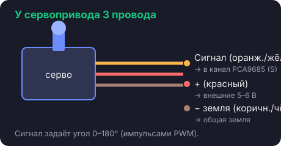

Сервопривод (серво) — это моторчик, который поворачивается не «крутится без конца», а встаёт на заданный угол от 0 до 180°. У него три провода:

Сигнальный провод задаёт угол специальными импульсами (это называется PWM) — но нам не нужно об этом думать: библиотека сама всё сделает, мы просто скажем «угол 90».
Нам понадобится драйвер PCA9685, подключённый к Nano (4 провода + питание — подробная схема в уроке 6). Воткни проверяемый серво в канал 0 и залей скетч (как заливать — урок 7):
#include <Wire.h> #include <Adafruit_PWMServoDriver.h> Adafruit_PWMServoDriver pwm; // драйвер серво void setup() { pwm.begin(); pwm.setPWMFreq(50); // серво работают на 50 Гц pwm.setPWM(0, 0, 375); // канал 0 в центр (~90°) } void loop() { }
Серво дёрнется и встанет в среднее положение. Теперь его можно ставить в сустав. Повтори это с каждым сервоприводом перед установкой.
angleToPulse,
и мы будем писать просто «угол 90».
150 (0°), потом 600 (180°) — крайние положения.
Перед сборкой верни центр (375).